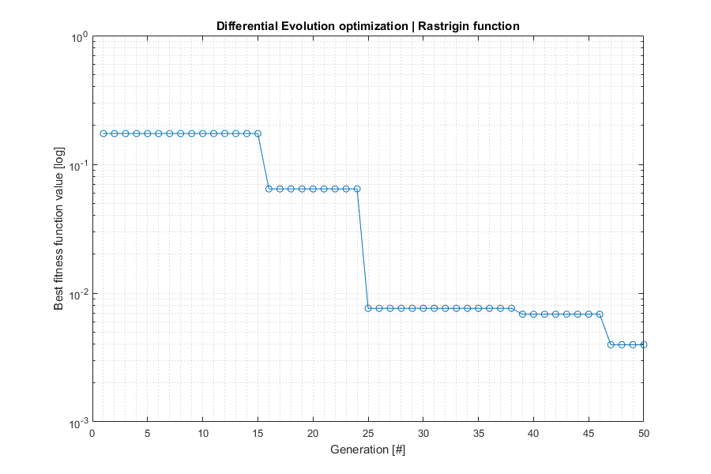
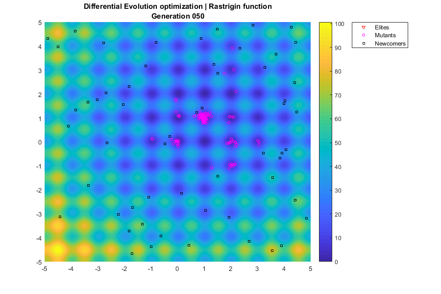

Example ADE
Find minima of a function with Differential Evolution (DE)
Programmers: David de la Torre (UPC/ETSEIAT) Manel Soria (UPC/ETSEIAT) Arnau Miro (UPC/ETSEIAT) Date: 23/11/2016 Revision: 2
Contents
ADE
% Our test is a R^2->R function based on Rastrigin function. % It is challenging because it has infinite local extrema, located at % integer numbers (ie, 8,-9) % The global minimum is at (1,1), and its value is 0 ras = @(x,y) 20+(x-1).^2+(y-1).^2-10*(cos(2*pi*(x-1))+cos(2*pi*(y-1))); % Define heuristic function options (optional) opts.ninfo = 2; % Verbosity level (0=none, 1=minimal, 2=extended) opts.label = 10; % Label (identification purposes) opts.dopar = 1; % Parallel execution of fitness function opts.nhist = 2; % Save history (0=none, 1=fitness, 2=all{pop,fit}) % Define ADE parameters ng = 50; % Number of generations np = 200; % Population size N = [3,... % Number of elites floor(np*0.7)]; % Number of mutants F = 0.1; % Mutation scaling factor ms = 1; % Mutation strategy (see ade.m) goal = 1E-5; % Target fitness value % Auxiliary function ranrange = @(a,b,n) a + (b-a)*rand(n,1); % n random values between a i b % Define ADE functions unifun = @(x,f) deal(x,f); % Discard identical individuals (unimplemented) fitfun = @(x) ras(x(1),x(2)); % Fitness function - TO BE MINIMIZED mutfun = @(F,a,b,c) a + F * rand() * (b - c); % Mutation: random vector movement ranfun = @() ranrange(-5,5,2); % Random individual prifun = @(x) fprintf('%f %f ',x(1),x(2)); % Print an individual % Randomize random seed rng('shuffle'); % We don't want repeatability in the heuristic algorithm % Execute Differential Evolution (DE) [ bestInd, bestFit, nite, lastPop, lastFit, history ] = ade ( ... opts, np, goal, ng, N, F, ms, unifun, fitfun, mutfun, ranfun, prifun ); % Now, we can easily improve the accuracy of the local extremum found options = optimset('TolFun',1E-8,'Display','none'); [bestIndFMS,bestFitFMS] = fminsearch(fitfun,bestInd,options); % Display results of aga and fminsearch algorithms fprintf('\nAlgorithm \tBest individual (x,y) \tValue\n'); fprintf('ADE \t\t%1.6f,%1.6f \t\t%1.6E\n',bestInd,bestFit); fprintf('FMS \t\t%1.6f,%1.6f \t\t%1.6E\n',bestIndFMS,bestFitFMS);
ADE label=10 g= 1 fitbest=1.733771e-01 best=1.022745 0.981083 ADE label=10 g= 2 fitbest=1.733771e-01 best=1.022745 0.981083 ADE label=10 g= 3 fitbest=1.733771e-01 best=1.022745 0.981083 ADE label=10 g= 4 fitbest=1.733771e-01 best=1.022745 0.981083 ADE label=10 g= 5 fitbest=1.733771e-01 best=1.022745 0.981083 ADE label=10 g= 6 fitbest=1.733771e-01 best=1.022745 0.981083 ADE label=10 g= 7 fitbest=1.733771e-01 best=1.022745 0.981083 ADE label=10 g= 8 fitbest=1.733771e-01 best=1.022745 0.981083 ADE label=10 g= 9 fitbest=1.733771e-01 best=1.022745 0.981083 ADE label=10 g=10 fitbest=1.733771e-01 best=1.022745 0.981083 ADE label=10 g=11 fitbest=1.733771e-01 best=1.022745 0.981083 ADE label=10 g=12 fitbest=1.733771e-01 best=1.022745 0.981083 ADE label=10 g=13 fitbest=1.733771e-01 best=1.022745 0.981083 ADE label=10 g=14 fitbest=1.733771e-01 best=1.022745 0.981083 ADE label=10 g=15 fitbest=1.733771e-01 best=1.022745 0.981083 ADE label=10 g=16 fitbest=6.443414e-02 best=0.983969 1.008248 ADE label=10 g=17 fitbest=6.443414e-02 best=0.983969 1.008248 ADE label=10 g=18 fitbest=6.443414e-02 best=0.983969 1.008248 ADE label=10 g=19 fitbest=6.443414e-02 best=0.983969 1.008248 ADE label=10 g=20 fitbest=6.443414e-02 best=0.983969 1.008248 ADE label=10 g=21 fitbest=6.443414e-02 best=0.983969 1.008248 ADE label=10 g=22 fitbest=6.443414e-02 best=0.983969 1.008248 ADE label=10 g=23 fitbest=6.443414e-02 best=0.983969 1.008248 ADE label=10 g=24 fitbest=6.443414e-02 best=0.983969 1.008248 ADE label=10 g=25 fitbest=7.614063e-03 best=0.994074 1.001808 ADE label=10 g=26 fitbest=7.614063e-03 best=0.994074 1.001808 ADE label=10 g=27 fitbest=7.614063e-03 best=0.994074 1.001808 ADE label=10 g=28 fitbest=7.614063e-03 best=0.994074 1.001808 ADE label=10 g=29 fitbest=7.614063e-03 best=0.994074 1.001808 ADE label=10 g=30 fitbest=7.614063e-03 best=0.994074 1.001808 ADE label=10 g=31 fitbest=7.614063e-03 best=0.994074 1.001808 ADE label=10 g=32 fitbest=7.614063e-03 best=0.994074 1.001808 ADE label=10 g=33 fitbest=7.614063e-03 best=0.994074 1.001808 ADE label=10 g=34 fitbest=7.614063e-03 best=0.994074 1.001808 ADE label=10 g=35 fitbest=7.614063e-03 best=0.994074 1.001808 ADE label=10 g=36 fitbest=7.614063e-03 best=0.994074 1.001808 ADE label=10 g=37 fitbest=7.614063e-03 best=0.994074 1.001808 ADE label=10 g=38 fitbest=7.614063e-03 best=0.994074 1.001808 ADE label=10 g=39 fitbest=6.851550e-03 best=0.994228 0.998892 ADE label=10 g=40 fitbest=6.851550e-03 best=0.994228 0.998892 ADE label=10 g=41 fitbest=6.851550e-03 best=0.994228 0.998892 ADE label=10 g=42 fitbest=6.851550e-03 best=0.994228 0.998892 ADE label=10 g=43 fitbest=6.851550e-03 best=0.994228 0.998892 ADE label=10 g=44 fitbest=6.851550e-03 best=0.994228 0.998892 ADE label=10 g=45 fitbest=6.851550e-03 best=0.994228 0.998892 ADE label=10 g=46 fitbest=6.851550e-03 best=0.994228 0.998892 ADE label=10 g=47 fitbest=3.974580e-03 best=0.996037 0.997920 ADE label=10 g=48 fitbest=3.974580e-03 best=0.996037 0.997920 ADE label=10 g=49 fitbest=3.974580e-03 best=0.996037 0.997920 ADE label=10 nite=50 fitbest=0.003975 best= 0.996037 0.997920 max. iterations reached, leaving Algorithm Best individual (x,y) Value ADE 0.996037,0.997920 3.974580E-03 FMS 0.999999,1.000003 2.167997E-09
Fitness plot
% Get fitness history if opts.nhist>1 && iscell(history) % Full history; get fitness values fithist = zeros(length(history),1); for i=1:length(history) fithist(i) = history{i,2}(1); end else % Simple history fithist = history; end % Plot fitness histroy if ~isempty(fithist) % Create figure fh1 = figure('Position',[400,200,900,600]); % Plot history semilogy(fithist,'o-'); % Beautify plot grid minor; title('Differential Evolution optimization | Rastrigin function'); xlabel('Generation [#]'); ylabel('Best fitness function value [log]'); end
Generations plot
% Only show generations when outputting full history if opts.nhist>1 && iscell(history) % Create figure fh2 = figure('Position',[400,200,900,600]); % Plot rastrigin function [x,y] = meshgrid(-5:0.05:5,-5:0.05:5); z = ras(x,y); bh = surf(x,y,z,'LineStyle','none'); colorbar('Location','EastOutside'); view(0,90); hold on; % Population size ne = N(1); % Number of elites nm = N(2); % Number of mutants % Plot generations ph = cell(np,1); % Handles for g=1:length(history) % Title title({['Differential Evolution optimization',... ' | Rastrigin function'];sprintf('Generation %03.0f',g)}); % Plot individuals for i=1:np % Select plotting marker if i<=ne, marker = 'rv'; % Elites elseif i<=ne+nm, marker = 'mo'; % Mutants else, marker = 'ks'; % Newcomers end % Plot individual x = history{g,1}{i}(1); y = history{g,1}{i}(2); z = 100; ph{i} = plot3(x,y,z,marker,'MarkerSize',4); % Save legend ticks if i==ne, lh(1) = ph{i}; % Elite elseif i==ne+nm, lh(2) = ph{i}; % Mutant elseif i==ne+nm+1, lh(3) = ph{i}; % Newcomer end end % Legend legend(lh(1:3),'Elites','Mutants','Newcomers',... 'Location','NorthEastOutside'); % Do events drawnow; % Wait pause(1); % Delete individuals if g~=length(history) % Keep last frame for i=1:np, delete(ph{i}); end end end end